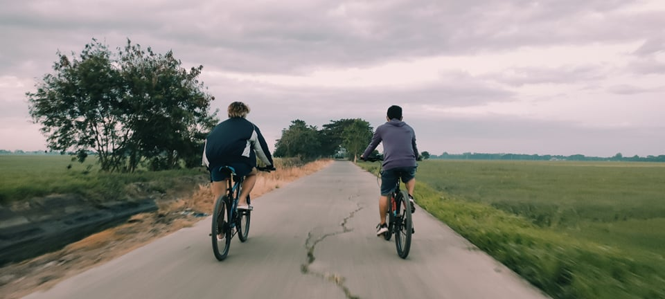
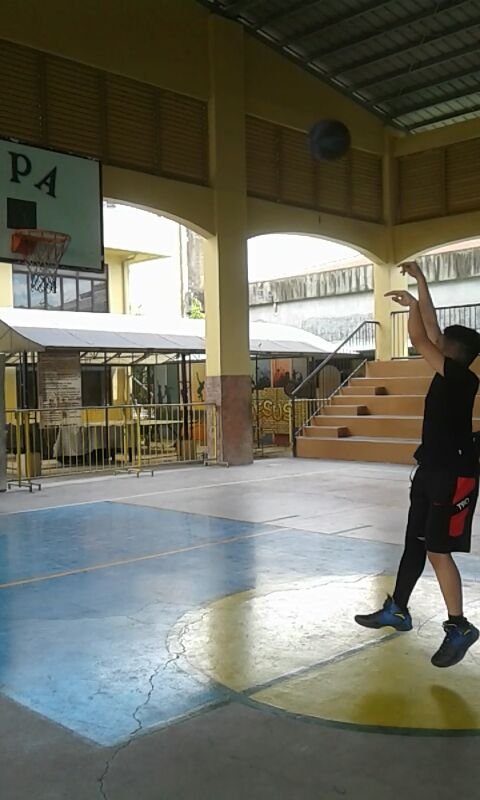
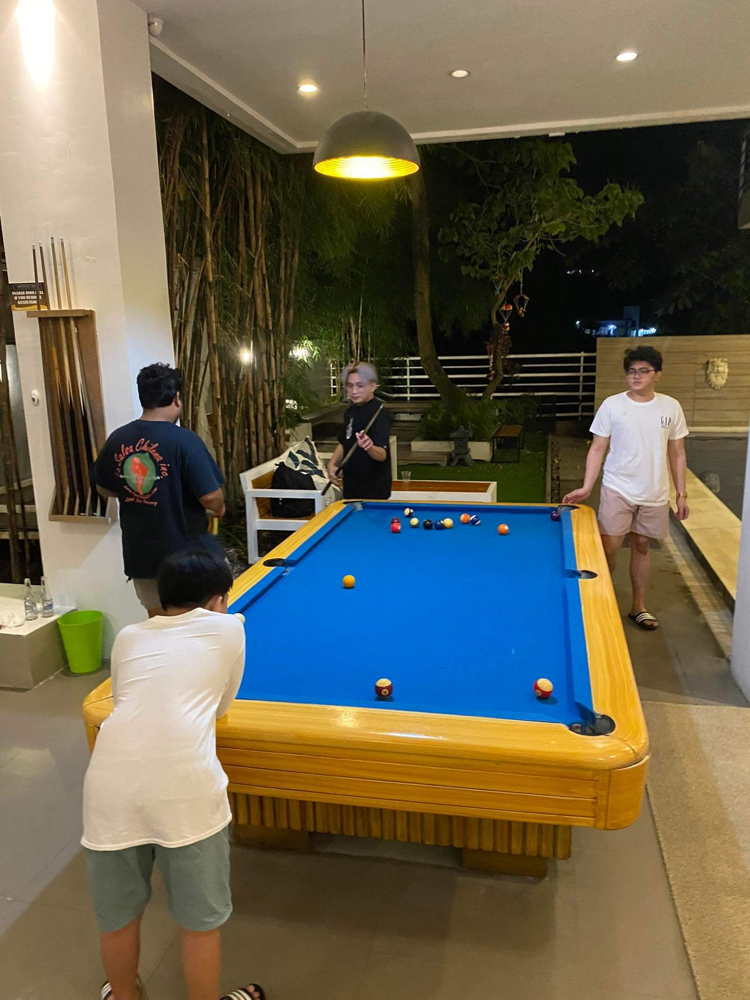
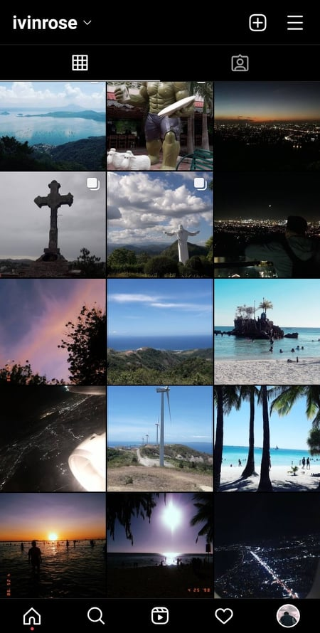
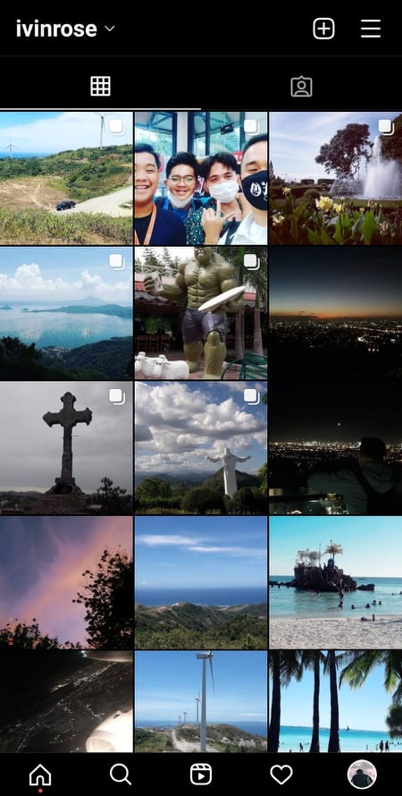

SKILLS
I believe that everyone has unique skills and that this is what distinguishes each of us.1 People have skills such as flexibility, the ability to be flexible in any circumstance, time management, emotional intelligence, and many others.2 People discover their skills at various stages of their lives.3 Everyone has at least one skill that they excel at, and for me, I believe I have a few skills that I acquired when I was growing up.4 One of my greatest strengths that I have recognized would have to be my ability to be flexible in any circumstance.5 My stress tolerance is quite high, which I have significantly improved.6 I believe that I am optimistic because I've always had a positive attitude, which keeps me going in life.7 I can express my ideas well.8 I am always eager to learn new things and improve what I already know.9 I can influence people easily.10 I am good at time management and finish my tasks before moving on to other things.11 I can solve problems easily.12 I can give relevant ideas on certain topics.13 I can take a risk.14 I can manage pressure.15 I take responsibility for my actions.16 I believe that's the skill that I have acquired, but I feel I lack one thing, and that is confidence.17 But I know that once I've got this skill, I'll be able to do anything that requires me to stand in front of a large group of people, such as speeches and meetings.18I am still learning about new skills that I plan to acquire.19I believe when each of us brings our unique skills to the table, the world improves.20
HOBBIES
We all know what hobbies are-you know, those fun activities we love to partake in just to distract ourselves from the stresses of life.1 Hobbies make us feel rejuvenated and satisfied, even when our lives are going through some disappointing phase.2I have a lot of hobbies to pass my time.3 Drawing is one of these things.4 Drawing has always made me happy, even since I was a small child.5 I can draw for hours if I sit quietly in a place.6 It keeps me busy while also relaxing my mind.7 There's a little secret behind why I enjoy drawing so much.8 Playing mobile or PC games, reading manga series, and buying stuff that I don't need is also my hobby.9 Strolling while riding bikes with my cousin is kind of my hobby too.10 However, my most favorite hobby is watching television, and I enjoy doing so in my spare time.11 My hobby is watching television, but it never interferes with my studies.12 First, I like to finish my school housework and then study hard.13 I believe I have a worthwhile hobby because watching television provides me with a wealth of information in a variety of fields.14 My parents enjoy my hobbies and are overjoyed when they hear all the latest news from me on the news and search channels on TV, including Animal Planet, as well as good cartoons and anime that inspire me to create art and cartoons.15 I am 21 years old and still studying, but I have had this hobby since I was a child.16 Truly, watching television plays an important role in our lives, and it benefits greatly when used creatively.17 It keeps us up to date on all the latest news and events from around the world.18 Because of the high level of competition, knowledge about events has become a necessity in modern society.19 It offers numerous advantages, such as increasing our knowledge and incorporating that knowledge into our daily lives, as well as protecting us from fake news on social media.20 There are several new TV shows on the air that are designed to raise our awareness of global issues.21 There are numerous subjective programs available to help us learn more about history, mathematics, economics, science, geography, culture, and a variety of other subjects.22

INTEREST
In my daily life, I've developed a number of interests.1 Playing games is the first.2 Because my friends also enjoy playing games and taught me how to play them when I was small, I've been playing them for a long time.3 After a few years, I became addicted to games, and I would always invite my friends to play with me.4 Despite the fact that I'm not very good at it, I still believed it would be one of my strengths.5 Playing sports, particularly basketball games, is another passion of mine.6 Since 2015, I have enjoyed watching basketball games in my spare time.7 One of my pastimes is reading.8 The majority of the books I've read have been fantasy and anime.9 Despite the fact that these anime books are not academic, they have had a significant impact on me.10 Traveling is one of my personal interests.11 Because I enjoyed it so much when I was younger, it quickly became one of my interests.12 While traveling around the country, I've seen a wide range of cultures and people.13 It gave me a lot of knowledge and experience.14 While on the road, I discovered two things.15 As a result, I learned to be more open-minded about people and their cultures as a result of it.16 It made me more open-minded when it came to interacting with people.17 I believe the second thing it taught me was to respect other cultures, regardless of whether or not traveling is one of my personal interests.18 It also made it easier to comprehend why people behave in the way they do in their own society.19 I'd like to learn more about programming and computer systems in the future so that I can meet the requirements for working in the IT industry in the future and even contribute to it by creating new programs or products.20
   